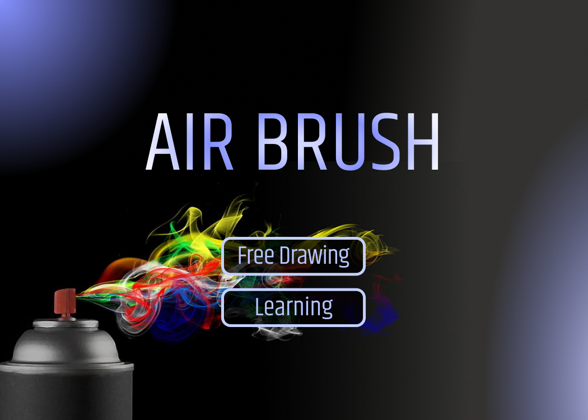

In this group project, we experimented with different sensors to create a rough adaptation for a digital painting tool used to practice urban artwork.
My role in this project was early design interations and planning of the final design. Along with the design of the final product's casing, I created conceptual artwork, and the interface designs.
The can was made using an old Rust-oleum spray can that I cut open and used as a housing unit for the main circuits. The box housing holds the receiver which collects data from the controller and translates it to the screen.
Sensors Used: Rotary Sensor, Force Sensing Resistor and a 9-axis accelerometer.
In the initial sketches for this project we looked into having a remote controller as the object we could draw with and use it in combination with a processing sketch that would map the movement of the cursor and draw.
The lower compartment of the spraycan housed the electrical components and contained spaces between the upper and lower sections to allow for the wiring and sensors to stick out. We had the accelerometer stuck to the bottom of the top section of the can since this needed to be callibrated and fixed to one spot. The rotary sensor was accessible from the outside of the can and the radio transmission sensor needed to be outside to hold a stronger connection to the computer. The force sensor was wired through the spacing between the top and bottom, then taped to the of the spraycan cap.
The beacon would connect the computer to the remote and would transmit the date of the accelerometer and sensors to the processing sketch. This would track the movement, thickness and colour of the cursor.
In processing the code would work similar to a cursor but linked to the sensors in the can. This would emit a drawing onto the display which shows a connect-the-dot type of excercise to help the user learn this style of art.
Creating AirBrush was intense and would not have been possible without my three team members. The main aspects of the project that I contributed to was the aesthetic of the remote and beacon housing, concept artwork, and support for electronics and coding.